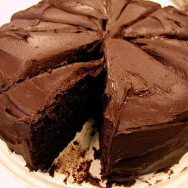

Chocolate Cake

Description
A chocolate cake is a rich, decadent dessert that is made
from a combination of cocoa powder, flour, sugar, eggs, and butter or oil.
The batter is typically mixed together and baked in the oven until it
rises and becomes fluffy and moist. Once cooled, the cake can be layered with
frosting or other toppings, such as whipped cream or fresh berries, to enhance
its flavor and presentation. Chocolate cakes are beloved for their indulgent,
chocolatey taste and are often served at special occasions or enjoyed as a
treat with a cup of coffee or tea.
Ingredients
- 2 cups all-purpose flour
- 2 cups sugar
- 3/4 cup unsweetened cocoa powder
- 2 teaspoons baking powder
- 1 1/2 teaspoons baking soda
- 1 teaspoon salt
- 1 teaspoon espresso powder
- 1 cup milk or buttermilk, almond, or coconut milk
- 1/2 cup vegetable oil or canola oil, or melted coconut oil
- 2 large eggs
- 2 teaspoons vanilla extract
- 1 cup boiling water
Steps
- Preheat oven to 350º F. Prepare two 9-inch cake pans by spraying with baking spray or buttering and lightly flouring.
- Add flour, sugar, cocoa, baking powder, baking soda, salt and espresso powder to a large bowl or the bowl of a
stand mixer. Whisk through to combine or, using your paddle attachment, stir through flour mixture until combined well.
- Add milk, vegetable oil, eggs, and vanilla to flour mixture and mix together on medium speed until well combined. Reduce
speed and carefully add boiling water to the cake batter until well combined.
- Distribute cake batter evenly between the two prepared cake pans. Bake for 30-35 minutes, until a toothpick or cake tester
inserted in the center of the chocolate cake comes out clean.
- Remove from the oven and allow to cool for about 10 minutes, remove from the pan and cool completely.
- Frost cake with Chocolate Buttercream Frosting.
Home